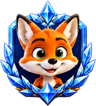

Daily tasks
0+
Simple actions, real rewards
Vietnam-inspired tap game
The tap game inspired by Vietnam that turns daily actions into progress, rewards and Web3 community.
Simple actions, real rewards
Coins earned by the community
Active players every day
Together we move further
Activate your daily session
Required task
0 / 100 taps
Who we are
FoxPay is a community-driven tap game focused on digital rewards, active participation and blockchain-inspired technology.
The ecosystem brings together airdrops, referrals, activity rewards, in-platform interactions, events and community missions under clear game rules.
What we believe in

About Foxpay
Foxpay is a digital entertainment and rewards platform built under a decentralized technology model, developed in Vietnam by a multidisciplinary team of programmers, engineers and specialists in affiliate systems and digital economies.
This decentralized approach keeps the platform focused on its infrastructure, its community and continuous innovation.
FOX economy
Players earn FOX through tasks, rankings and game activity. The profile shows progress, balance and withdrawal options.
Game design
Energy, packages, skins, roulette tickets and video tasks create a simple daily loop focused on repeated progress.
Growth
The referral system helps players invite friends, build activity and compete in community rankings.
What FoxPay includes
FoxPay includes daily missions, video tasks, CPA campaigns, referrals, seasonal rankings, anti-abuse controls, withdrawals and FOX rewards.
The player enters the game, completes available actions, collects tickets or FOX rewards, checks ranking progress and returns for new tasks.
Ecosystem keywords
tap game, video tasks, CPA rewards, FOX token, referral economy, roulette tickets, mobile PWA, skins, packages, seasonal ranking, withdrawals.